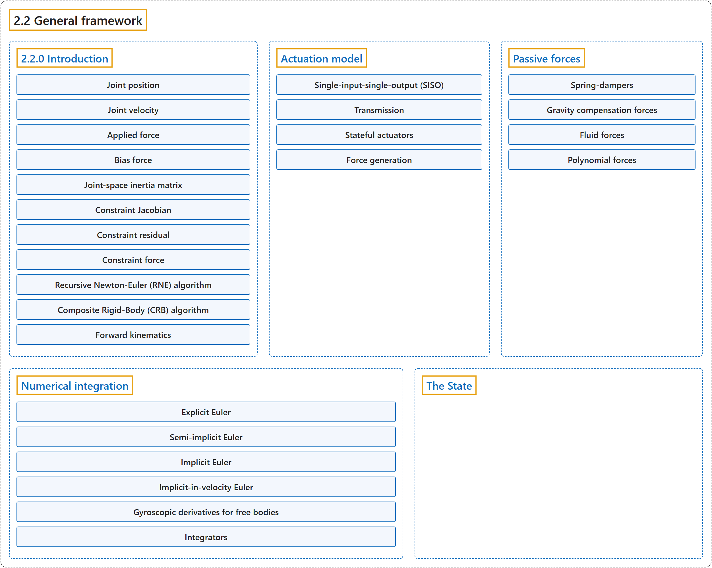

2.2 General framework
Classification

Glossary
| Term | Definition | 中文翻译 | Source |
|---|---|---|---|
| 2.2 General framework 一般框架 |
(No definition) | （无定义） | Google DeepMind, n.d., "General framework" |
| 2.2.0 Introduction 介绍 |
(No definition) | （无定义） | Google DeepMind, n.d., "General framework" |
| Joint position 关节位置 |
(No definition) | （无定义） | Google DeepMind, n.d., "General framework" |
| Joint velocity 关节速度 |
(No definition) | （无定义） | Google DeepMind, n.d., "General framework" |
| Applied force 施加力 |
"applied force: passive, actuation, external" | 施加力：被动力、驱动力、外力 | Google DeepMind, n.d., "General framework", table, row 6 |
| Bias force 偏置力 |
"bias force: Coriolis, centrifugal, gravitational" | 偏置力：科里奥利力、离心力、重力 | Google DeepMind, n.d., "General framework", table, row 7 |
| Joint-space inertia matrix 关节空间惯性矩阵 |
(context) "inertia in joint space" | （语境）关节空间中的惯性 | Google DeepMind, n.d., "General framework", table, row 8 |
| Constraint Jacobian 约束雅可比矩阵 |
"The Jacobian establishes the relationship between quantities in joint and constraint coordinates." | 雅可比矩阵建立了关节坐标与约束坐标中各量之间的关系。 | Google DeepMind, n.d., "General framework", para. 5 |
| Constraint residual 约束残差 |
(No definition) | （无定义） | Google DeepMind, n.d., "General framework" |
| Constraint force 约束力 |
(No definition) | （无定义） | Google DeepMind, n.d., "General framework" |
| Recursive Newton-Euler (RNE) algorithm 递归牛顿-欧拉（RNE）算法 |
(context) "Their sum is computed using the Recursive Newton-Euler (RNE) algorithm with acceleration set to 0." | （语境）它们的和用递归牛顿-欧拉（RNE）算法计算，计算时把加速度设为 0。 | Google DeepMind, n.d., "General framework", item 2 |
| Composite Rigid-Body (CRB) algorithm 复合刚体（CRB）算法 |
(context) "... is computed using the Composite Rigid-Body (CRB) algorithm." | （语境）……用复合刚体（CRB）算法计算。 | Google DeepMind, n.d., "General framework", item 3 |
| Forward kinematics 正向运动学 |
"Before any of these computations we apply forward kinematics, which computes the global position and orientation of all spatial objects as well as the joint axes." | 在进行这些计算之前，我们先应用正向运动学，它计算所有空间对象以及关节轴的全局位置和朝向。 | Google DeepMind, n.d., "General framework", para. 8 |
| Actuation model 驱动模型 |
"These three components of an actuator – transmission, activation dynamics, and force generation – determine how the actuator works." | 驱动器的这三个组成部分，即传动、激活动力学和力生成，决定了驱动器如何工作。 | Google DeepMind, n.d., "Actuation model", para. 3 |
| Single-input-single-output (SISO) 单输入单输出（SISO） |
"Most actuators are single-input-single-output (SISO)" | 大多数驱动器是单输入单输出（SISO）的 | Google DeepMind, n.d., "Actuation model", para. 1 |
| Transmission 传动 |
"The transmission attaches the actuator to the rest of the system." | 传动把驱动器连接到系统的其余部分。 | Google DeepMind, n.d., "Transmission", para. 1 |
| joint and tendon 关节与肌腱传动 |
"The joint and tendon transmission types act as expected and correspond to the actuator applying forces or torques to the target object." | joint 和 tendon 传动类型按预期工作，对应于驱动器向目标对象施加力或力矩。 | Google DeepMind, n.d., "Transmission", item 1 |
| jointinparent 父坐标系关节传动 |
"The jointinparent transmission is unique to ball and free joint and asserts that rotation should be measured in the parent rather than child frame." | jointinparent 传动专用于球关节和自由关节，规定转动应在父坐标系而不是子坐标系中度量。 | Google DeepMind, n.d., "Transmission", item 2 |
| slider-crank 曲柄滑块传动 |
"slider-crank transmissions transform a linear force to a torque, as in a piston-driven combustion engine." | slider-crank 传动把线性力转换为力矩，就像活塞驱动的内燃机那样。 | Google DeepMind, n.d., "Transmission", item 3 |
| body 刚体传动 |
"body transmission corresponds to applying forces at contact points belonging to a body, in order to model vacuum grippers and biomechanical adhesive appendages." | body 传动对应于在属于某个刚体的接触点上施加力，用于建模真空吸盘和生物力学中的黏附附肢。 | Google DeepMind, n.d., "Transmission", item 4 |
| site 站点传动 |
"Site transmissions correspond to applying a Cartsian force/torque in the frame of a site." | site 传动对应于在某个 site 的坐标系中施加笛卡尔力/力矩。 | Google DeepMind, n.d., "Transmission", item 5 |
| Stateful actuators 有状态驱动器 |
"Some actuators such as pneumatic and hydraulic cylinders as well as biological muscles have an internal state called “activation”." | 有些驱动器，如气缸、液压缸以及生物肌肉，具有一个内部状态，称为“激活”。 | Google DeepMind, n.d., "Stateful actuators", para. 1 |
| Activation 激活 |
"Some actuators such as pneumatic and hydraulic cylinders as well as biological muscles have an internal state called “activation”." | 有些驱动器，如气缸、液压缸以及生物肌肉，具有一个称为“激活”的内部状态。 | Google DeepMind, n.d., "Stateful actuators", para. 1 |
| Force generation 力生成 |
"Each actuator generates a scalar force for each of its outputs, as a function of its controls, activation states, and lengths and velocities." | 每个驱动器为它的每个输出生成一个标量力，它是控制量、激活状态以及长度和速度的函数。 | Google DeepMind, n.d., "Force generation", para. 1 |
| Passive forces 被动力 |
"Passive forces are defined as forces that depend only on position and velocity, and not on control in forward dynamics or acceleration in inverse dynamics." | 被动力定义为只依赖于位置和速度的力，在正向动力学中不依赖于控制，在逆向动力学中不依赖于加速度。 | Google DeepMind, n.d., "Passive forces", para. 1 |
| Spring-dampers 弹簧阻尼器 |
"MuJoCo can compute three types of passive forces: Spring-dampers in joints and tendons." | MuJoCo 可以计算三种被动力：关节和肌腱中的弹簧阻尼器。 | Google DeepMind, n.d., "Passive forces", item 1 |
| Gravity compensation forces 重力补偿力 |
(No definition) | （无定义） | Google DeepMind, n.d., "Passive forces" |
| Fluid forces 流体力 |
"Fluid forces exerted by the surrounding medium." | 由周围介质施加的流体力。 | Google DeepMind, n.d., "Passive forces", item 3 |
| Polynomial forces 多项式力 |
"Nonlinear stiffness (joints, tendons) and damping (joints, tendons) are defined by polynomials" | 非线性刚度（关节、肌腱）和阻尼（关节、肌腱）由多项式定义 | Google DeepMind, n.d., "Polynomial forces", para. 1 |
| Anti-symmetrization 反对称化 |
"The damping polynomial uses anti-symmetrized even-powered monomials" | 阻尼多项式使用反对称化的偶次幂单项式 | Google DeepMind, n.d., "Polynomial forces", item 1 |
| Sign-preservation 保号 |
"In both cases, sensible choices of coefficients often satisfy the sign-preservation condition" | 在两种情况下，合理选择的系数通常满足保号条件 | Google DeepMind, n.d., "Polynomial forces", item 2 |
| Numerical integration 数值积分 |
(context) "Four numerical integrators are available, three single-step integrators and the multi-step 4th order Runge-Kutta integrator." | （语境）有四种数值积分器可用：三种单步积分器和多步的四阶龙格-库塔积分器。 | Google DeepMind, n.d., "Numerical integration", para. 2 |
| Explicit Euler 显式欧拉法 |
(context) "The explicit Euler method is not supported by MuJoCo but has pedagogical value." | （语境）显式欧拉法不被 MuJoCo 支持，但有教学价值。 | Google DeepMind, n.d., "Numerical integration", para. 2 |
| Semi-implicit Euler 半隐式欧拉法 |
"Comparing (2) and (3), we see that in semi-implicit Euler, the position is updated using the new velocity." | 比较 (2) 和 (3) 可以看到，在半隐式欧拉法中，位置用新的速度更新。 | Google DeepMind, n.d., "Numerical integration", para. 4 |
| Implicit Euler 隐式欧拉法 |
"on the right-hand side of the velocity update is evaluated at the next time step" | 速度更新右侧的加速度在下一个时间步上求值 | Google DeepMind, n.d., "Numerical integration", para. 5 |
| Implicit-in-velocity Euler 速度隐式欧拉法 |
"When the expansion is only with respect to velocity (and not position), the integrator is known as implicit-in-velocity Euler." | 在展开只针对速度（而不针对位置）的情况下，这种积分器称为速度隐式欧拉法。 | Google DeepMind, n.d., "Numerical integration", para. 5 |
| Gyroscopic derivatives for free bodies 自由刚体的陀螺导数 |
"Therefore for standalone free bodies (free bodies with no jointed descendants), these derivatives are reinstated." | 因此，对于独立自由刚体（没有带关节后代的自由刚体），这些导数会被恢复。 | Google DeepMind, n.d., "Numerical integration", item 1 |
| Standalone free bodies 独立自由刚体 |
"Therefore for standalone free bodies (free bodies with no jointed descendants), these derivatives are reinstated." | 因此，对于独立自由刚体（没有带关节后代的自由刚体），这些导数会被恢复。 | Google DeepMind, n.d., "Numerical integration", item 1 |
| Integrators 积分器 |
"MuJoCo supports five integrators: four single-step integrators and the multi-step 4th order Runge-Kutta integrator." | MuJoCo 支持五种积分器：四种单步积分器和多步的四阶龙格-库塔积分器。 | Google DeepMind, n.d., "Integrators", para. 1 |
| Semi-implicit with implicit joint damping (Euler) 带隐式关节阻尼的半隐式法（Euler） |
"only includes derivatives of joint damping" | 只包含关节阻尼的导数 | Google DeepMind, n.d., "Integrators", item 1 |
| Implicit-in-velocity (implicit) 速度隐式法（implicit） |
"includes derivatives of all forces except the constraint forces" | 包含除约束力以外所有力的导数 | Google DeepMind, n.d., "Integrators", item 2 |
| Fast implicit-in-velocity (implicitfast) 快速速度隐式法（implicitfast） |
"includes derivatives of all forces used in the implicit method, with the exception of the centripetal and Coriolis forces" | 包含隐式方法所用的所有力的导数，但向心力和科里奥利力除外 | Google DeepMind, n.d., "Integrators", item 3 |
| Discrete-time (discrete) 离散时间法（discrete） |
"This integrator gives up that separation, in the tradition of the velocity-stepping schemes: the constraint solve and the implicit update are one operation whose solution is the step itself" | 这种积分器沿袭速度步进格式的传统，放弃了这种分离：约束求解和隐式更新是同一个运算，其解就是这一步本身 | Google DeepMind, n.d., "Integrators", item 4 |
| 4th-order Runge-Kutta (RK4) 四阶龙格-库塔法（RK4） |
"MuJoCo implements the fixed-step 4th-order Runge-Kutta method, though users can easily implement other integrators by calling mj_forward and integrating accelerations themselves." | MuJoCo 实现了定步长的四阶龙格-库塔法，不过用户可以通过调用 mj_forward 并自行积分加速度，轻松实现其他积分器。 | Google DeepMind, n.d., "Integrators", item 5 |
| The State 状态 |
"The state is entirely encapsulated in the mjData struct and consists of several components." | 状态完全封装在 mjData 结构体中，由若干组成部分构成。 | Google DeepMind, n.d., "The State", para. 2 |
References
Google DeepMind. (n.d.). Computation. MuJoCo Documentation (Version 3.17.0). Retrieved October 31, 2026, from https://mujoco.readthedocs.io/en/stable/computation/index.html